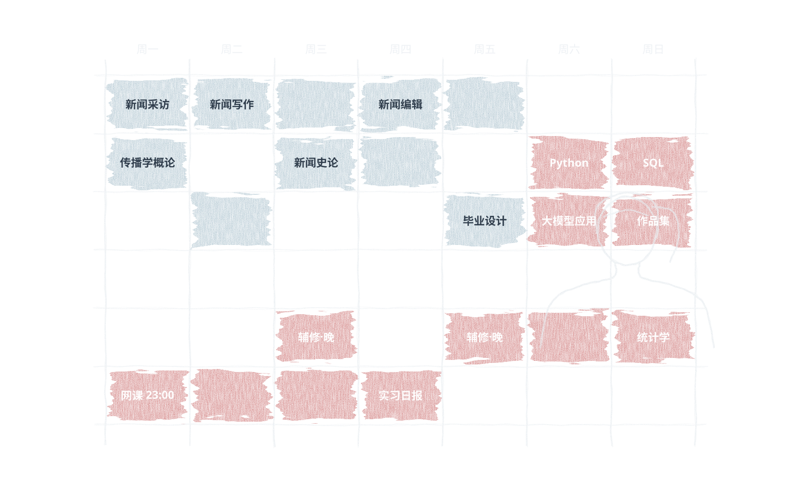
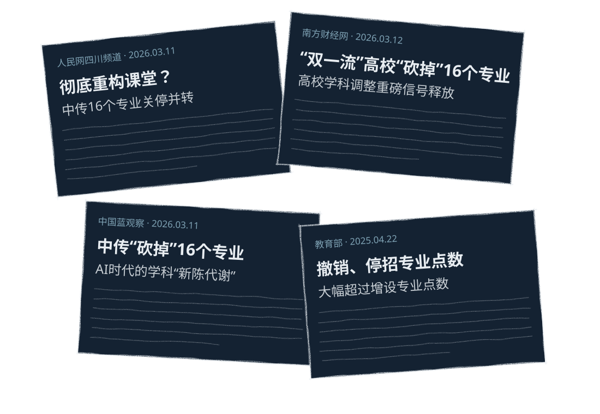
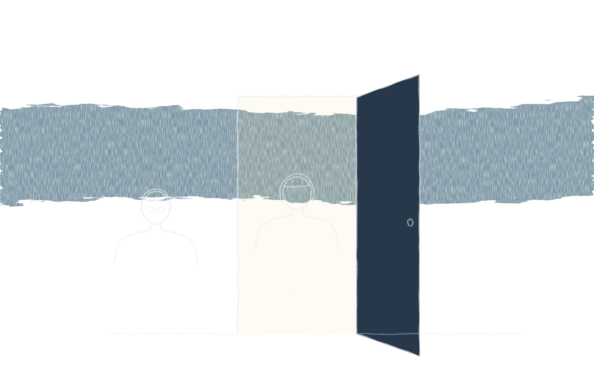
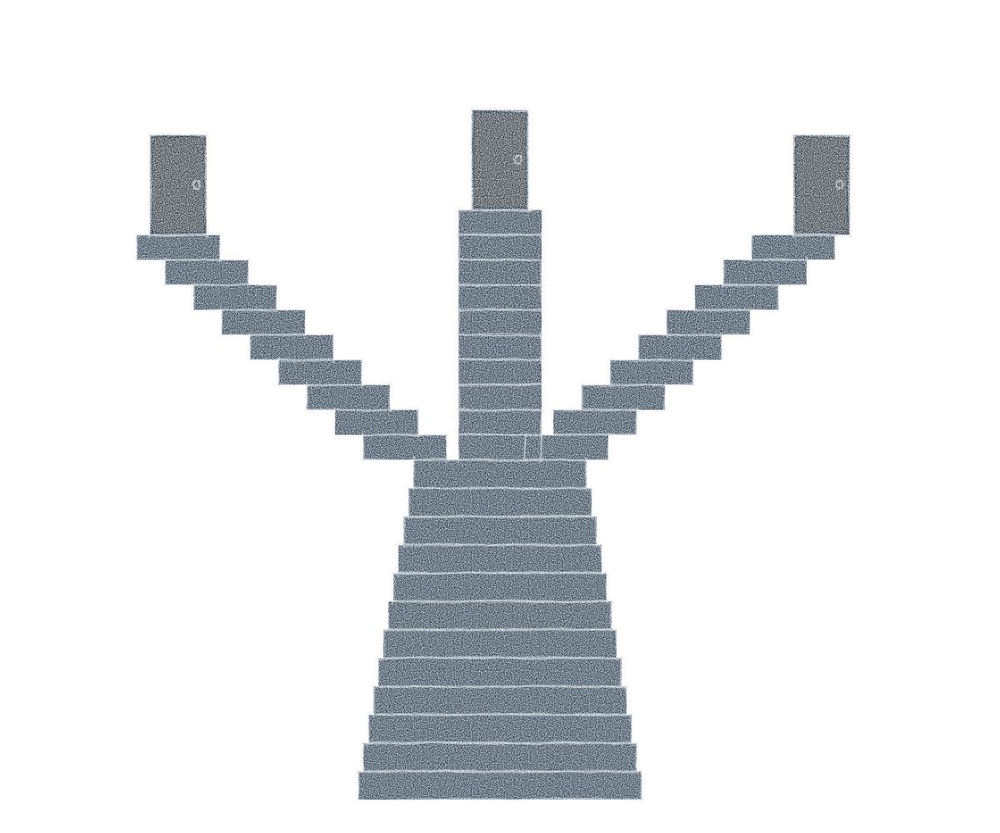

林禾 · 往左
秋招投向互联网内容与数据分析岗。她把方向课作业改成可展示的作品集，简历上第一行写的是SQL和Python。在53条样本里，这类岗位最常点名数据分析与AI工具。

新课先写给下一届，在读的人只能自己补
向下滚动 ↓

2026年3月11日，周三深夜
中国传媒大学新闻学2023级的林禾
刷到一条推送：中传“砍掉”16个专业
她做的第一件事，是去翻自己专业的名字

“还在。”
新闻学不在名单里。林禾松了口气，往下翻，又松不下来了。
推送里说，全国两会期间，中国传媒大学党委书记廖祥忠披露，学校“一口气砍掉翻译、摄影等16个本科专业和方向”，并解释“不必惊慌”：一些技术训练类的细分专业，“没必要作为单独专业存在”。南方财经 学校招生处则对记者表示，具体名单“目前还没有公示”。人民网
信号其实来得更早。2025年5月，中传发布本科“四个一批”专业建设推进会的消息：全校共16个专业实施关停并转，全部在建专业进入升级改造序列；关停并转针对的，是“社会需求不足、与行业发展脱节的专业方向”。那篇通稿里还有一句话：学校要“主动应对AI带来的‘灭顶’挑战”。中传官方发布
媒体梳理出的名单里，有摄影、翻译、漫画，有会计学、应用统计学，没有一个新闻传播类专业。中国蓝观察 可林禾读得懂这句话的另一半：没被砍，不等于不会被改写。
注：名单与分组均取自中国蓝观察报道，非学校公布的正式名单；报道称经管理工类“7个”，所列名单却有8个，语言类称“4个”只列出3个，此处照录原文。学校招生处称具体名单“目前还没有公示”。
数据来源：中国蓝观察（新浪财经转载，2026-03-11）；教育部2024年度本科专业备案名单
这不是一所学校的事。教育部2025年4月公布2024年度本科专业备案和审批结果，高教司负责人的说法是：“撤销、停招专业点数大幅超过增设专业点数”。教育部答记者问
数据来源：教育部《2024年度普通高等学校本科专业备案和审批结果》及答记者问
那新闻传播类自己呢？我们逐行解析了教育部2019—2024年度的备案和审批结果附件，把其中365条新传类（专业代码0503）专业点逐条整理出来。教育部2022年度结果
注：传统五专业指新闻学、广播电视学、广告学、传播学、编辑出版学；其他新兴专业含国际新闻与传播、数字出版、时尚传播、会展。新增含二年制第二学士学位点。2023、2024年度附件不再列逐校撤销名单，2025年度未公布备案和审批结果。
数据来源：教育部2019—2024年度普通高等学校本科专业备案和审批结果附件，逐行统计；2019年附件为扫描件，经OCR后逐行对照原图核对
2019—2022年，五个传统专业新增23个（四年制）、撤销88个；网络与新媒体2019—2024年新增170个，只撤销2个，占新传类全部新增的六成多。撤得最多的是广告学：四年里撤销40个。北京也有4个传统专业点被撤销，包括中国人民大学的编辑出版学（2020年度）。
北京的变化写在学校自己的公开文件里。清华大学《2023—2024学年度专业设置、当年新增专业、停招专业名单》写明：新闻学“仅面向在校生设置辅修学位”，广告学“不招生”。清华信息公开 学生的流向也在改变：据阳光高考平台统计，网络与新媒体的全国毕业生规模已达2.8万—3.0万人，超过新闻学的2.6万—2.8万人；开设该专业的院校415所，比新闻学多出91所。阳光高考·网络与新媒体阳光高考·新闻学
2022年度，是教育部最后一次附上逐校撤销名单。此后全国撤销数依然在高位，2024年度另有停招2220个，却只剩总数；到2025年度，连分项总数也没有公布。教育部2025年度通知 教育部只说，“十四五”期间全国新增本科专业布点1.02万个，撤销或停招1.22万个，“今年全国高校专业调整比例首次突破10%”。教育部新闻稿
专业的名字会变，课表会重写，而且不会等她毕业。林禾需要一张主修之外的“第二张课表”。
可第二张课表该补什么、从哪里补、要花多少？像她这样的学生，又在怎样审视自己的专业？
进入新闻学院的第一年，林禾在开学典礼上听过那句话：
铁肩担道义，妙手著文章。
培养方案许诺的，是“具有深厚人文素养、敏锐新闻判断与全媒体生产能力的复合型人才”。采访、写作、编辑、新闻史论，这是她的第一张课表。
出了校门，招聘方递来的却是另一张清单。
我们逐条编码了53条招聘启事：新华社、人民网、中国日报社等中央媒体15条，财新、澎湃、21世纪经济报道等市场化媒体18条，字节、腾讯、快手、百度等互联网大厂20条（内容岗、数据分析岗各10条），共涉及23家用人单位，发布时间从2024年12月到2026年11月。每条启事按13项技能逐一标注“是否被直接点名”。
数据来源：53条招聘启事编码，见文末“数据与方法”
中央媒体的清单，几乎就是林禾的第一张课表：写作、选题、采编、视频。互联网的清单换了一套语言：用户、指标、平台，还有AI。
为了不让数据岗“自带”的数据要求干扰判断，我们把互联网的内容岗单独拿出来看。这些岗位做的是内容策划、运营和创意写作，正是新传学生最常投递的方向。
数据来源：53条招聘启事编码。中央媒体15条、市场化媒体18条、互联网内容岗10条、数据岗10条；比例＝提及该技能的岗位数／该组岗位数
互联网10条内容岗里，7条点名数据分析与指标，7条点名AI工具与大模型；“新闻采编与判断”一次也没有出现。腾讯的内容运营岗写着“具备SQL、Python等数据分析相关能力”，还要“能对AI的输出进行高质量判断”；小红书的创意写作岗要求“熟练使用AIGC工具辅助内容创作……而非直接依赖生成结果”。腾讯小红书
这不只是53条样本里的现象。猎聘大数据研究院统计，2025年上半年明确要求掌握AI工具的职位数量同比增长149.41%；在要求AI工具的前20个职类里，新媒体运营、视频编辑等内容及运营类岗位占了4个。猎聘报告（新浪转载）
反过来，“新闻采编与判断”在中央媒体15条里出现11次，在市场化媒体18条里出现11次。两张清单并不互相取代，它们只是越来越不重叠。
清单之外，还有一道门槛写在“专业要求”一栏。
数据来源：53条招聘启事编码。“限定”指只接受所列专业；“优先”指所列专业优先；“点名新传”指专业要求中出现新闻传播学类专业
中央媒体15条启事全部限定专业，其中13条点名新闻传播类；互联网20条里，只有3条提到新传专业，却有8条点名理工、数学、统计或计算机。21世纪经济报道的2027届校招记者岗写着“经济、管理、理工科等相关专业优先”，没有提新闻专业。21世纪经济报道
一头，新传专业是入场券；另一头，它只是简历上的一行字。林禾想去的是后一头。
对一个新传学生来说，想补上另一张清单，有几条制度化的路可走：

资料来源：人大全校荣誉课程包（2025）；中传新闻学辅修简章（2025）；北大国际传播与国际金融项目简章（2025）
每一条路，都有人从另一边走过来。
同一所学校里，会计学2023级的周屿，看到的是同一份名单的另一面：会计学在中传2025年本科专业设置公示中被列为拟撤销。人民网 已经入学的人可以读完，但这个专业不会再有学弟学妹。那年春天，他报名了中传面向本校非新传类学生开放的新闻学辅修。

在周屿的辅修毕业证明上，学位会被“注明”为辅修。中传简章写得清楚：修满40学分可获辅修学位，修满25学分可获专业证书。中传新闻学辅修简章
“跨界”一词里的“界”，既可以是跨过去的边界，也可以是挡在外面的门槛。高校说修读者是“复合型跨学科人才”；到了资格审查，用人单位看的却是另一样东西。
人民日报社2025年招聘公告写明：“岗位要求的专业条件均为报名应聘人员获得的最高学历所对应专业。”人民日报社招聘公告 在这样的条款面前，本科辅修只是一行附注；只有跨考硕士，才换得掉“最高学历”的专业名称。
这一行附注也有价钱。
数据来源：中传2025年辅修招生简章；北大FLIC 2025、国际传播与国际金融2025简章
中传辅修按学分收费，每学分130元：拿辅修学位至少40学分、5200元，拿证书至少25学分、3250元；上课时间在周三晚、周五晚和周末，计划招收150人。周屿算过，这相当于把一年半的周末，换成一个“注明辅修”的学位。
16学分的辅修必修课里，他最想上的是数据新闻。真正以“数据”“数字”命名的，只有两门。
按课程名称归类；课程名称不能证明实际教授了哪些技术。
数据来源：中传2025年辅修招生简章及教学计划（课程表第4页）
跨进来的人，补的是新传的采写编；新传自己，也有人往外走。
北京大学新闻与传播学院的苏棠，2025年入选学院的“国际传播与国际金融”项目。项目“不另收学费”，但要在9月到次年4月去深圳、4月到6月去英国学习，住宿、生活、交通与保险费用由学生自理，也不能中途退出或修读双学位。金融2025简章
门开着，走进去的人却不多。
注：公示人数不是报名人数，不能据此计算录取率。
数据来源：北大外国语学院FLIC 2024、2025录取公示；新闻与传播学院国际金融项目2025拟录取公示
三次公示，人数都低于计划：FLIC两年各计划20人，公示6人、8人；国际金融计划约15人，拟录取5人。门槛写在简章里：报名成绩须居前50%，不可修双学位，要异地学习。FLIC2025简章
能接住周末、学费与异地生活费的，往往是绩点靠前、家里能托举的学生。苏棠是其中之一，她也知道，自己是被筛出来的少数。
第二张课表没有固定的教室，也没有固定的时间。它塞进晚上、周末和通勤路上。
招聘方对实习生的要求写得很具体：21世纪经济报道的视频运营实习生，“一周至少能出勤3天，持续实习3个月及以上”；DT财经的实习生，“每周可到岗3天及以上”。21世纪经济报道 中传辅修的课，排在周三晚、周五晚和周末。把这些时间填进一周，三个人的日程是这样的：
（点击按钮切换人物，拖动滑杆查看一周中不同时段）

主修课堂 辅修晚课 图书馆 宿舍 实习单位 地铁 / 高铁情景重建：辅修上课时段、实习到岗天数、项目异地学习时间均取自公开简章与招聘启事；具体排程为示意，待时间日志回收后替换为真实记录。
主修的课一节没少，第二张课表只能往缝隙里塞。林禾的晚上属于网课，周末属于作品集；周屿的周三和周五没有晚饭时间；苏棠的周末，常常是在深圳给北京的论文小组开线上会。
累的不只是时间。夜里躺下以后，手机上还亮着那些招聘启事。
睡前刷到的招聘要求（均为招聘启事原文）
这些句子没有一句是写给新传学生的，也没有一句把他们挡在外面。它们只是安静地列出一张更长的清单，等着有人自己补齐。
到了2026年秋天，三个人各自站在不同的楼梯口。

秋招投向互联网内容与数据分析岗。她把方向课作业改成可展示的作品集，简历上第一行写的是SQL和Python。在53条样本里，这类岗位最常点名数据分析与AI工具。
修满25学分拿证书，还是再修15学分拿“注明辅修”的学位？他算的是另外1950元，和又一个学期的周末。
从英国回来以后，她把跨专业考研写进计划：在“最高学历所对应专业”的资格审查面前，硕士专业才换得掉本科的名字。
“课表上的课我都上完了，可招聘启事上的那张，我只能自己排。”
—— 林禾（新闻学2023级）
“我的专业不会再招新生了。我想多一个选项，哪怕只是证书上的一行字。”
—— 周屿（会计学2023级，新闻学辅修）
“项目不收学费，可深圳的房租、英国的机票，每一样都要自己付。”
—— 苏棠（北大新传，国际金融项目）
以上三人为基于公开资料构建的情景人物，引语为情景写作，非采访内容；人物所涉专业调整、课程、收费与招聘要求均来自文中注明的公开文件。
好的课表不会自己长出来。在学生自己补课的同时，第一张课表也在被改写。
中传新闻学院官网列出了6个本科专业及方向的主要课程。我们按课程名称归类：名称含“数据”“计算”“Python”“网页抓取”“自然语言”“统计”“社会网络分析”的，计为数据、计算与AI类课程。中传新闻学院
按课程名称归类，不推断实际授课内容；“数字新闻学原理”等以“数字”命名的课程未计入。
数据来源：中国传媒大学新闻学院 · 本科专业介绍（2026-11-20核对）
2014年后开设的三个方向，主要课程里各有7门数据、计算与AI类课程；1959年开设的新闻学和传播学，各只有2门。这张图里，林禾所在的新闻学排在倒数第二行。
新课是写给下一届的。方案每改一次，已经入学的人就得自己补上差额。
中传不是孤例。2020年到2025年，至少8所高校的新闻传播院系，把数据和AI写进了课表或项目：
传播学（智能与计算传播方向）：“调整招生方向名称、优化升级专业培养方案，加大人工智能相关课程设置”
原文：央广网“学院建立了‘人工智能+传播学’的双学位项目，将于明年开始招生”
原文：光明网广告学核心专业课含“智能广告策划……广告创意与表现（含AI应用）”
原文：人大新闻学院新闻学本科培养方案列有“数据新闻 3学分”“媒介编程 3学分”
原文：清华培养方案计算概论C由信科、新传、体育教研部“三方联合打造”，面向新传学院体育特长生
原文：北大信科“新闻学院推出新闻学+人工智能、传播学+人工智能两个双学士学位项目”
原文：复旦新闻文化网国际传播、智能传播试验班要求掌握“高等数学、数据结构、数据库编程、大语言模型原理与应用等数智基础”
原文：武大新闻网本科必修课《人机传播》：“全国新闻传播学院中首个面向本科生开设的人机方向专业必修课程”
原文：南大新传院新增的形式有三种：在原专业下开新方向（中传、武大），与AI专业组成双学士（北师大、复旦），在现有方案里加课（人大、清华、北大、南大）。
制度也在给第二张课表开门。2023年到2025年，北京五所高校把跨学科入口写进了文件：清华的新闻学辅修学位，北师大的“传播学＋人工智能”双学位，北大的FLIC和国际金融联合培养，中传面向全校的新闻学辅修，人大面向全校开放的15学分荣誉课程包。人大清华
全国层面的文件也已经写到课表上。2026年4月，教育部等五部门印发《“人工智能+教育”行动计划》，要求“优化传统学科专业人才培养方案，指导高校开设人工智能交叉融合课程，丰富跨学科、跨专业课程群”，并“鼓励开设相关微专业课程和微证书项目”。教科信〔2026〕1号
“第二张课表”正从学生的自我救济，慢慢写进学校的主干设计。
摩擦仍有三重：课程更新慢于岗位对数据与AI的要求；能接住周末、学费与异地生活费的，往往是绩点靠前、家庭有托举的学生；而只要资格审查仍按最高学历所对应的专业把关，本科跨学科凭证就难以消解学历焦虑。
面对“专业调整”这样的庞然大物，个人的时间与选择都显得渺小。对林禾、周屿和苏棠来说，拿到毕业证、证书或者一行附注，都不等于上岸。
专业的名字会改，课表会重写——
下一张课表，现在才开始排。
招聘启事：53条，来自23家用人单位（中央媒体15、市场化媒体18、互联网大厂20，其中内容岗与数据分析岗各10），发布时间2024年12月—2026年11月；校招39条、社招初级8条、实习6条。按13项技能人工编码“是否直接点名”，任职要求与优先条件均计入。为检验编码稳定性，另以关键词规则独立复核4项核心技能：AI工具与大模型 κ=0.78，数据分析与指标 κ=0.92，编程与数据工具 κ=1.00，新闻采编与判断 κ=0.73；分歧均为语义差异（如“AI”指Adobe Illustrator、“人工智能”作为报道领域），保留人工编码。样本为目的性抽样，结论仅限所采集样本，不代表全部招聘市场。2026年11月20日复核时，有2条微信公众号原文链接已失效（澎湃美数课数据编辑、新京报我们视频实习生），正文按抓取时保存的原文编码。
课程：北大FLIC 2024（25门）与中传新闻学辅修2025（18门），合计43门；中传新闻学院6个专业／方向主要课程取自学院官网。按课程名称归类，不推断实际授课内容。
专业调整：新传类（0503）专业点逐行取自教育部2019—2024年度备案和审批结果附件，共365条，与各年全国总数核对一致；2023、2024年度附件不含撤销名单，2025年度未公布结果。中传16个专业名单为媒体梳理。毕业生规模与开设院校数取自阳光高考平台（统计截至2025年12月31日，院校数为学籍口径，不等于教育部布点数）。
核验：正文72处外链于2026年11月20日逐一打开核对，记录见 research/ext/link_audit.csv。
人物：林禾、周屿、苏棠为基于真实专业调整信息构建的情景人物，并非采访对象；其所涉制度、课程、收费与招聘要求均有公开来源。第三章“一周”为示意排程。
下载底表：招聘原文（53条） · 技能编码矩阵 · 课程（43门） · 来源索引 · 教育部新传类专业点明细（365条） · 外部数据 · 外链核验记录 · 图表数据 JSON
选题、数据、撰文、可视化、网页：桂梦倩
插画：程序化手绘（tools/art.py）
AI 协助：Claude · Codex
（本文人物为情景构建；所有数据均可在“数据与方法”中下载核对）